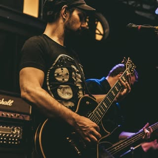

Interview – Scott Mellinger – Zao/Lonely Ghost/Pack
When did you start playing guitar, and what guitar and equipment did you start on?
I started playing guitar when I was 10 but really buckled down with it around 12 years old. My very first electric was a Harmony Discovery, like a cheap super strat with awful selections from EMG single coils. I had some weird no-name little amp, but I eventually got a Gorilla, and then my world opened up!
Which bands inspired you to start playing guitar, and are there certain riffs or songs that specifically motivated you to start playing guitar?
Metallica was the first music I heard that made me want to play. I got Master of Puppets from my cousin, and it blew my brains out. The thing that should not be, that palm-muted sound, is still to this day my favorite song from them. When did you really feel your guitar playing and equipment got more professional and you thought , “Yes, this is the sound I really like! ”?
Probably when my parents saved up and I bought myself my Ibanez RG 560. I had a Crate GX1600 half stack, and I swore it was the best, haha. I still have the Ibanez; I’ll never get rid of it. But honestly, once I heard a good tube amp, that really opened my ears. I had an OG 5150 for a long time, and now I play a JCM 800. The truth is tone is a never-ending pursuit. Do these 2 go hand in hand, or did they evolve differently for your playing and your equipment?
My playing evolved first for sure. I grew up pretty low middle class. It wasn’t easy to afford this stuff. I got good on the Harmony before I was able to upgrade. Can you tell me a bit about the guitar gear used on the albums of Zao? For example, which amps, guitars, pedals, and pickups did you guys use on the albums you were participating in or aware of being used?
So early on I used whatever I could. I think on my first album, Liberate, I had my Ibanez and used a Marshall Valvestate that our good friend Jason Magnussen had. We had a few other combos, and Russ had a JCM 2000. After that I fell in love with ESP guitars and was able to somehow get a deal through them. I’ve used them on every record since.I also have an old ’85 Gibson Les Paul Custom that is my main recording guitar; it’s on everything now. The last few records have been a mix of Marshall 800 with an early IbanezTube Screamer and a MesaTrem-o-verb.
I have noticed you used a Peavey 5150, then a Mesa Boogie Dual Rectifier (or Tremoverb), and currently a Marshall JCM 800: do the amps also resemble the change of growth of the music you play?
I think the more seasoned you get, the better you understand the frequency ranges of all the instruments. The JCM 800 cuts through everything better than any amp I’ve owned. I try hard to think of the band like that, less about me alone and more about how all the instruments work as a unit. I love every one of those amps still; I’d honestly play a 5150 for the rest of my life.
Can you tell me a bit about why you changed the amps over time, and do you think you might get back to, for example, the 5150? (as it is perhaps much more aggressive-sounding than a JCM 800?)
I’ve always wanted an 800 but wasn’t able to afford one; honestly though, when I was looking, they were like 800 to 1000 then. The 5150 I had was 400 dollars and sounded amazing, so I went with that. Once I could afford the 800, I grabbed one.
I definitely would play a 5150 like I said forever if I had to. I’m on the hunt for one again, and sadly, they’ve jumped in price!
What is the biggest selling point for you of your current amp? (Why is it preferred over the older used amps?)
The JCM 800. Has the clarity and cut I love overall. My 800 has 6550 power tubes, so my low end is really present but doesn’t get muddy. I just think that amp is perfect to my ears.
Which album are you most proud of as a guitar player?
The well-intentioned virus is easily the most proud. As a guitarist, I think I was able to do exactly what I always wanted to with that record. But I think Crimson is the proudest I’ve been as a songwriter. I don’t know; the last 2 records are easily the best to me.
Is there something you learned over the years about guitar gear (for example, using a Tube Screamer, specific pickup or strings, amps, cabs, passive vs. active pickups, etc.) that you wished you knew before and gave you an ‘AHA!’ moment?I have an aha moment like every week, honestly. I think for sure a tube amp and passive pickups are the key for me. I definitely love having an overdrive pushing the front of my 800; that is a must-have. I feel simple is usually better. It’s you, a guitar, an ID, and a tube amp; that should be enough.
Passive vs. active pickups: which one do you prefer for your style and band, and why?
Passive all the way. They just have something more pleasing to my ear. Active pickups are too clean and precise; I like some dirtiness in there.
Which pickups do you use live and during recording?
I’ve been really excited about Avedissian pickups. Alex is his own company and builds them to order. I had him do some really nice relic’d gold-covered pickups. I use the scythe bridge and a big iron P90 in my neck. Used them for recording and live! Also have used Seymour Duncan JBs and Duncan Distortion for years too.
What is the most consistent item in your guitar rig, and why?
I have never changed my pick thickness. I play the 1.13 million. It’s a pretty heavy-duty pick I always have; I just love the power it gives my string attack.
Which riff of one of the songs you wrote are you most proud of, and why?
The clean intro to the liberate record. That one was very special to me. I think that part really sets the whole record. There might be way better riffs, but that part for that time, and it being my first record, I’d have to say that one.
Which guitar players of current existing bands inspire you as a guitar player, and why?
There are so many, but I’d say Mike Scheidt from the band YOB. He plays with the most pure emotional energy. He’s equally brutal and beautiful. I’ve had the pleasure of talking with him too, and he is so kind and just lovely.
Last but not least: any last words or tips for guitar players out there?
Never stop; always move forward. Getting better doesn’t always mean skill alone; songwriting skills are so important for understanding all types of music and different instruments. There is always more to learn. Check Scott’s Instagram page to see/read/listen more about Scott and the amazing bands he plays in.